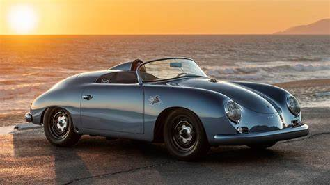

En 1947, Ferry Porsche expresó por primera vez su idea de fabricar un deportivo utilizando componentes de Volkswagen que, inicialmente denominado en clave “VW-Sport”, recibió el número de fabricación 356.
En 1948, Europa estaba pasando grandes apuros y la demanda del mercado era para automóviles prácticos y asequibles. En esta situación, Ferry Porsche decidió cumplir su sueño de crear su propio deportivo, para encontrar que otros tantos aficionados del automóvil compartían precisamente ese sueño con él.
El Porsche 356 montaba una motorización de cuatro cilindros opuestos, una nueva caja de cambios, suspensión, muelles y dirección de origen Volkswagen. Con un peso de tan sólo 585 kg, este roadster de motor central con 35 CV desarrollaba una velocidad máxima de 135 km/h.
